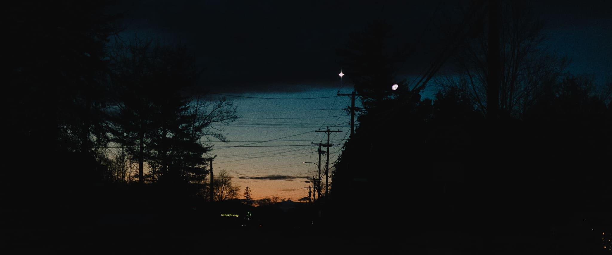

“when i see anything, i see a lot of things.”
- howard finster
- howard finster
.
· people ·
· life ·
· bays & rivers ·
· cities ·
· procreate ·
* all shot on canon eos r6 and sony fx3
color graded on lightroom and davinci resolve
** wide-screen desktop is recommended for the best experience
color graded on lightroom and davinci resolve
** wide-screen desktop is recommended for the best experience
合作 / dm

.
mintysw
xinyu guo, revere beach, ma
snowww
xue bai, mount sunapee, nh
alivid
alina and david
christian science plaza, boston, ma
christian science plaza, boston, ma
bbblue

before the sunrise and after the sunset,
when the sun is slightly below the horizon,
the sky will be tinted by this cool and pure blue
this is what photographers usually call “the blue hour”
or in chinese: “华灯初上”, meaning “when the lanterns just lit”
“the blue hour” only lasts a short period of time, about 20 mins
and the dreamy baby blue gets more rich and thick on cloudy days
shooting photos at this time is just like playing a hunting game
with a time limit - every moment is full of unexpected pleasure
when the sun is slightly below the horizon,
the sky will be tinted by this cool and pure blue
this is what photographers usually call “the blue hour”
or in chinese: “华灯初上”, meaning “when the lanterns just lit”
“the blue hour” only lasts a short period of time, about 20 mins
and the dreamy baby blue gets more rich and thick on cloudy days
shooting photos at this time is just like playing a hunting game
with a time limit - every moment is full of unexpected pleasure

we were playing some lofi chillhop radios
randomly searched from youtube music
just to get ourselves completely relaxed
and melted into the baby blue waves
as the new year comes, she’s graduating
and this was supposed to be a gown shooting session
which got aborted due to the atlantic freezing seawind
randomly searched from youtube music
just to get ourselves completely relaxed
and melted into the baby blue waves
as the new year comes, she’s graduating
and this was supposed to be a gown shooting session
which got aborted due to the atlantic freezing seawind
when i asked her about the mood we want to set
she said, it’s like, a bit of desolation and loneliness, maybe
cause graduation is like a milestone for growing up
everybody has to live by their own paths now
it’s always hard to describe the feeling
when you leave a place and the people that
you love so much and are so familiar with
and start a brand new chapter of your life
however, my take is always that
“the best is yet to come”
she said, it’s like, a bit of desolation and loneliness, maybe
cause graduation is like a milestone for growing up
everybody has to live by their own paths now
it’s always hard to describe the feeling
when you leave a place and the people that
you love so much and are so familiar with
and start a brand new chapter of your life
however, my take is always that
“the best is yet to come”

“may 1st” by beach fossils
0124
you and me with our long hair
on the gold wall
after midnight we could feel it all
i’d go anywhere you want to
you should see there’s a place
i want to take you
when the train comes i will hold you
‘cause you blow my mind
- beach house
on the gold wall
after midnight we could feel it all
i’d go anywhere you want to
you should see there’s a place
i want to take you
when the train comes i will hold you
‘cause you blow my mind
- beach house
从远古时代，我们看见闪电会想象神，
看见流水会感叹形形色色的未来世界、前世今生。
我们心里永远不是停滞在表面的这么一个短暂的生活里，
我们内心永远是性灵化的。
所以我们会在某一个时刻忽然体悟到自己的来路，
体悟到自己内心的本在，
我们一下子会打开自己，
然后那些无稽的世界、物质的世界，
一下子就会退后了。
爱情来到时，就是这样一个时刻。
- 梁永安
看见流水会感叹形形色色的未来世界、前世今生。
我们心里永远不是停滞在表面的这么一个短暂的生活里，
我们内心永远是性灵化的。
所以我们会在某一个时刻忽然体悟到自己的来路，
体悟到自己内心的本在，
我们一下子会打开自己，
然后那些无稽的世界、物质的世界，
一下子就会退后了。
爱情来到时，就是这样一个时刻。
- 梁永安
bin lou and xinyu guo
chords

“what’s the best way to appreciate frédéric chopin?”
“if you know how to play a piano, just play it…”
“if not, then just do the most elegant thing you think
while you are listening to it…”
“if you know how to play a piano, just play it…”
“if not, then just do the most elegant thing you think
while you are listening to it…”


ryan zhao and yingshan zhao
mtsnow

82 davis drive, wilmington, vt
the cabin we stayed in a two-day ski trip
2 tannery rd, west dover, vt
upscale vermont cuision & cocktails
in a charming 18th-century house
the cabin we stayed in a two-day ski trip
2 tannery rd, west dover, vt
upscale vermont cuision & cocktails
in a charming 18th-century house
holidays


每当海上起雾时，我都会放下手头的事，去沙滩上散步。
夏天的时候海水温暖，还会脱下鞋，
缓缓步行到海里几十米远的地方。
站在海浪之中，被海雾的香味环绕，
天和海的边界仿佛就在伸手可及的地方模糊化开。
夏天的时候海水温暖，还会脱下鞋，
缓缓步行到海里几十米远的地方。
站在海浪之中，被海雾的香味环绕，
天和海的边界仿佛就在伸手可及的地方模糊化开。


kagami

said kozo kagami: “we should pursue creation of true
value refraining from short-sighted, ephemeral creativity”
and endorsed the idea of “monozukuri-no-kokoro” or passion
for manufacturing excellence. based on this principle the
company intends to continue its relentless efforts to
enhance technologies, skills and commitment in offering
products of high standards of technique and creativity,
bringing hope and brilliance to your life through
long lasting, high-quality glassware.
value refraining from short-sighted, ephemeral creativity”
and endorsed the idea of “monozukuri-no-kokoro” or passion
for manufacturing excellence. based on this principle the
company intends to continue its relentless efforts to
enhance technologies, skills and commitment in offering
products of high standards of technique and creativity,
bringing hope and brilliance to your life through
long lasting, high-quality glassware.
annavoy
north side
center
south side
a “flying” ups 767
shot on mitakon speedmaster 50mm f/0.95 iii
boston logan international airport
bayswater st x annavoy st
shot on mitakon speedmaster 50mm f/0.95 iii
boston logan international airport
bayswater st x annavoy st
yachtclub

麻省的温斯洛普镇坐落在洛根机场旁，和主跑道
22R、22L、27和33L的接地区相隔一带浅湾，是我拍摄飞机的首要去处。
在数个拍摄点中，科塔公园游艇俱乐部是距离27和33L跑道接地区最近的
一个。每当海上刮西风时，我都会前往科塔俱乐部，拍摄来自遥远欧洲的
国际航班，从一望无际的大西洋地平线远方逐渐显现，带着数百乘客，
轻轻摇晃乘着风，直到在我面前接地。
22R、22L、27和33L的接地区相隔一带浅湾，是我拍摄飞机的首要去处。
在数个拍摄点中，科塔公园游艇俱乐部是距离27和33L跑道接地区最近的
一个。每当海上刮西风时，我都会前往科塔俱乐部，拍摄来自遥远欧洲的
国际航班，从一望无际的大西洋地平线远方逐渐显现，带着数百乘客，
轻轻摇晃乘着风，直到在我面前接地。


在等待航班的空闲时间里，我也会随意拍摄周遭环境、游艇和野生动物。


airliners


2006年，在第十代微软模拟飞行发布之后不久，我开始自学
航空知识和飞机驾驶，在模拟器里想象自己是一名飞行员。
转眼十年后，2016年的暑假，上海浦东国际机场，美联航
747-400的驾驶舱里，我在摆弄着油门推杆和自动油门按钮，
副驾驶拿着我的摄影机笑嘻嘻地在拍着，飞了30年的机长
老爷子把他的帽子轻轻戴在我的头上说：
“keep up your dreams, son.”
航空知识和飞机驾驶，在模拟器里想象自己是一名飞行员。
转眼十年后，2016年的暑假，上海浦东国际机场，美联航
747-400的驾驶舱里，我在摆弄着油门推杆和自动油门按钮，
副驾驶拿着我的摄影机笑嘻嘻地在拍着，飞了30年的机长
老爷子把他的帽子轻轻戴在我的头上说：
“keep up your dreams, son.”
董先生赠予我的机长肩章和SOP标准飞行手册，
在很长一段时间里都激励着我的小小飞行梦想。
他在海南航空作为飞行教员执飞E190多年，
至今仍在一线飞行。
相信未来自己每次看到这组美联航E190的特写，
都能记得年少时的那份激情。
在很长一段时间里都激励着我的小小飞行梦想。
他在海南航空作为飞行教员执飞E190多年，
至今仍在一线飞行。
相信未来自己每次看到这组美联航E190的特写，
都能记得年少时的那份激情。

JAL7/JL7, Boeing 787-9/B789, BOS/Boston-NRT/Tokyo, “日航大白鹤”
GEnx-1B引擎后整流罩上的波浪形边缘能够降低80%的最大推力噪音
GEnx-1B引擎后整流罩上的波浪形边缘能够降低80%的最大推力噪音

QTR744/QR744, Airbus 350-900/A359, DOH/Doha-BOS/Boston, “oneworld special livery”
这是卡塔尔航空机队第一架带有寰宇一家航空联盟特别涂装的A350XWB
这是卡塔尔航空机队第一架带有寰宇一家航空联盟特别涂装的A350XWB

UAE237/EK237, Boeing 777-300ER/B77W, DXB/Dubai-BOS/Boston, “GE90-115B: the most powerful jet engine”
作为世界上最大的双发喷气式客机，B77W永远是场上的老大哥
他所携带的两颗GE90-115B是世界上推力最强的喷气式发动机
任何一架B77W全推力起飞都是重型机械和暴力美学的极致演绎
作为世界上最大的双发喷气式客机，B77W永远是场上的老大哥
他所携带的两颗GE90-115B是世界上推力最强的喷气式发动机
任何一架B77W全推力起飞都是重型机械和暴力美学的极致演绎
campus


mit cambridge campus
memorial drive
charles river
building 10
memorial drive
charles river
building 10


calligraphy

《one more time, one more chance》 by 山崎まさよし
《秒速5センチメートル》主题曲
传统纵书，行书，自右向左阅读
《秒速5センチメートル》主题曲
传统纵书，行书，自右向左阅读

《今、このとき。》 by 柊
《夏目友人帐》主题曲
传统纵书，行草，自右向左阅读
《夏目友人帐》主题曲
传统纵书，行草，自右向左阅读
toratora!